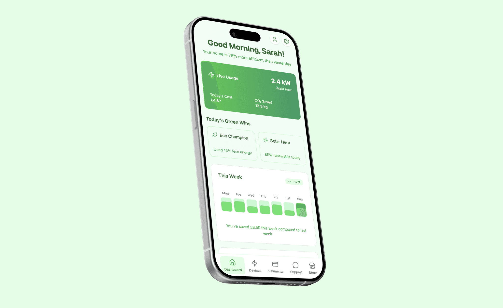
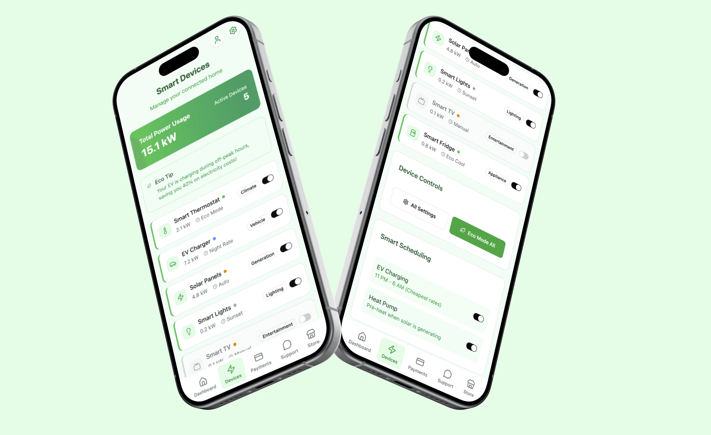
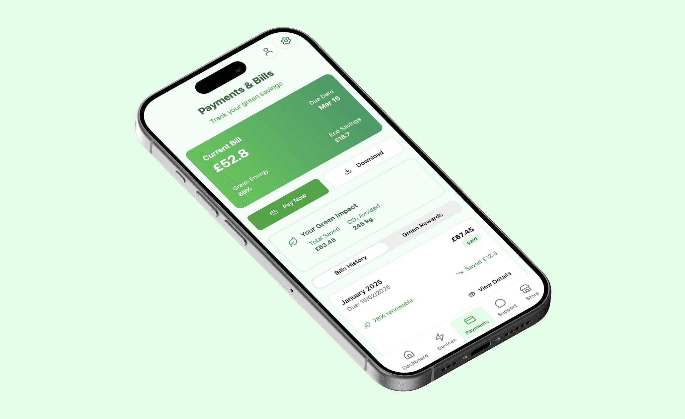
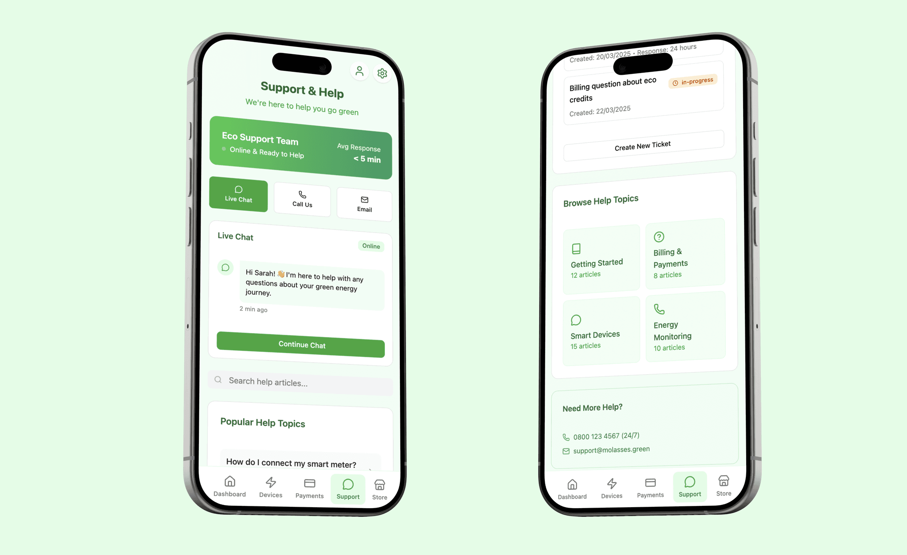
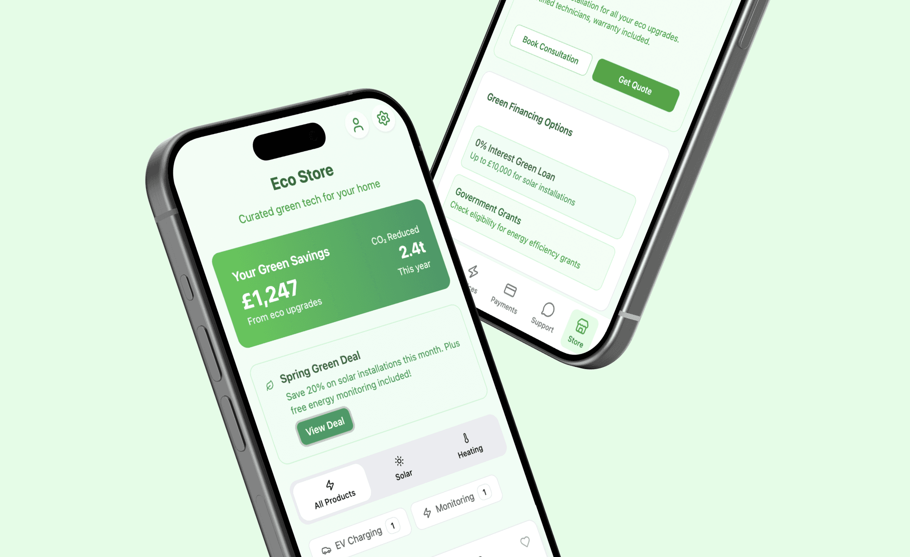
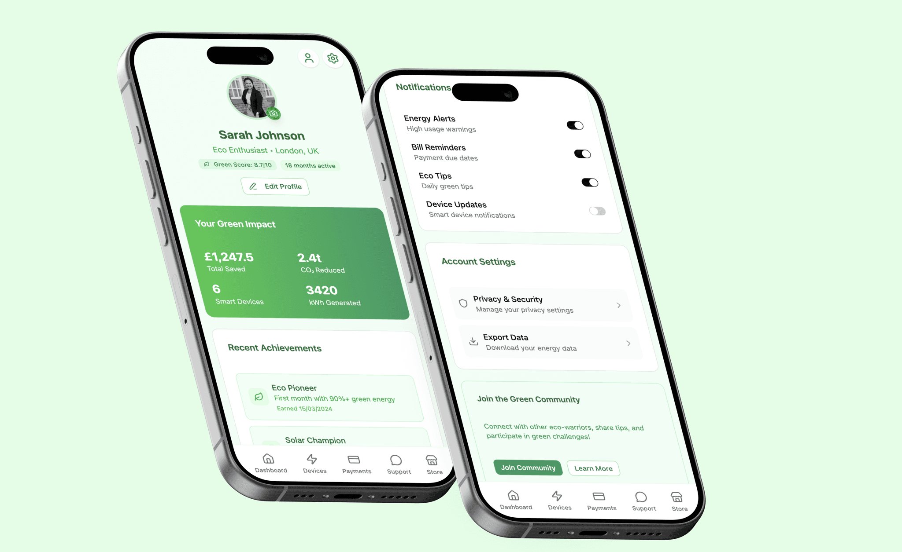

This case study was developed after a conversation with a friend who works in the energy sector, which provided valuable insights into consumer pain points and industry challenges. Motivated by these learnings, I created Molasses, a green energy management app concept designed to simplify and promote sustainable energy use for homeowners and eco-conscious users.
The full interactive prototype can be explored here: https://formal-chair-18918614.figma.site/






Personas
Olivia – The Eco-Conscious Homeowner
A detail-oriented professional focused on reducing her household’s carbon footprint. Olivia needs clear, accessible data on energy consumption and actionable advice that fits her busy lifestyle.
Alex – The Tech Enthusiast
An early adopter of smart home technology, Alex monitors and controls multiple energy devices and values real-time analytics and integration with renewable energy sources.
Maria – The Budget Saver
Family-oriented and practical, Maria is mindful of utility costs and appreciates transparency and notifications that help her optimize energy usage to save money.
Problem Statement
- Users struggle with opaque energy consumption data and complicated tariff structures.
- Lack of easy eco-friendly energy monitoring tools that combine device integration, billing transparency, and actionable insights.
- Existing solutions fail to engage users with meaningful incentives for green behavior.
- Support systems are often slow or limited in languages, reducing user confidence.
Competitive Analysis
Ostrom App – Strong regional green energy focus and dynamic pricing but complex for a global user base.
Emporia Energy – Detailed device tracking and gamification, yet UI can be overwhelming.
Sense Energy Monitor – Deep hardware integration but expensive and less focused on tariffs or billing.
Google Nest – Seamless device control but limited cross-platform support and data transparency.
Molasses Solution
Molasses synthesizes the best industry elements with fresh user-centric design:
- Friendly, green-themed UI blending data clarity and warmth.
- Real-time dashboards combining cost, usage, and ecological impact.
- Simple device management for smart meters, EV chargers, and solar energy.
- Transparent tariff selection and billing with flexibility and clear cost breakdowns.
- Community challenges, rewards, and in-app eco-tips to encourage sustainable habits.
- Rapid, multi-channel customer support with detailed help resources.
Design & User Flows
- Clear signup with automated provider switching and green plan selection.
- Intuitive home dashboard showing usage stats, environmental impact, and actionable savings tips.
- Device control panels seamlessly manage energy load and optimize green consumption.
- Transparent plans page with side-by-side tariff comparisons, usage forecasts, and cost visuals.
- Payment portal with invoice history and flexible options.
- Support system with live chat, searchable knowledge base, and push notifications for energy alerts and community updates.
Outcome
Molasses empowers users to confidently manage their energy footprint with transparency and ease, combining rich functionality with a friendly, green-centric visual identity. This project reflects deep industry insights translated into a tech-forward, inviting experience that supports greener lifestyle choices.